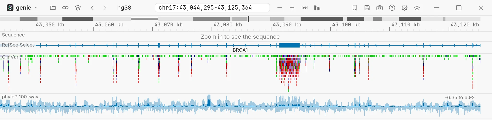
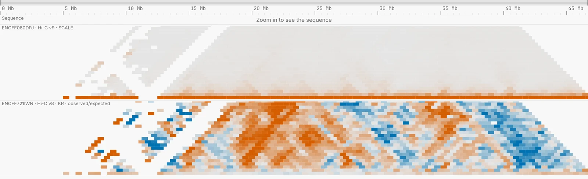
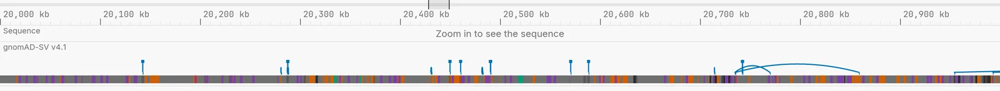
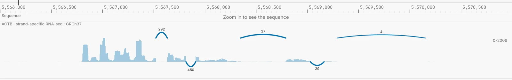
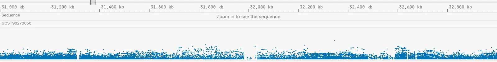
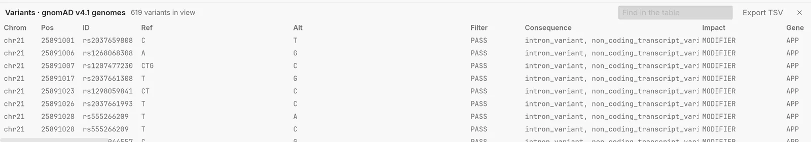
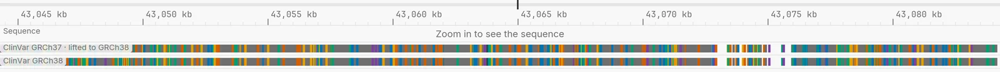
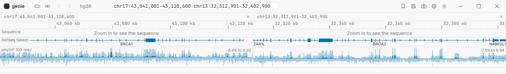
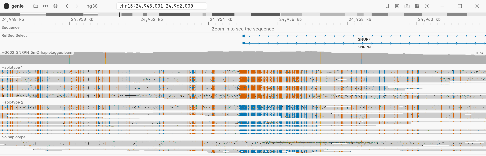

genie
A genome browser for Windows, macOS and Linux.
genie shows sequences, genes, reads, variants, signal, Hi-C maps and GWAS results. It opens files on your computer, on web servers and in public cloud buckets, and it reads only the parts of a file that the view needs. genie uses Rust and the iced GUI library.

BRCA1 on hg38, with RefSeq Select genes, ClinVar variants and phyloP 100-way conservation. The tutorial shows how to get there.
What genie does
Genomes and tracks
Ten genomes of the UCSC Genome Browser open with one click, with their genes and chromosome bands. The tracks button adds public UCSC tracks, for example ClinVar, dbSNP, GENCODE and phyloP, and opens track hubs.
Files
FASTA, 2bit, BED, GFF3, GTF, bigBed, BAM, CRAM, VCF, BCF, bigWig, bedGraph, bedMethyl, Hi-C, BEDPE, bigInteract, SEG, GWAS summary statistics and tabix tables. Files without an index open too: genie sorts and indexes them in its cache.
On the web
genie reads files on web servers and in public Amazon S3 and Google Cloud Storage buckets, from their https://, s3:// and gs:// addresses. It reads only the parts of a file that the view needs.
Reads
Read pairs, splits, base modifications such as 5mC, groups by haplotype or tag, splice junction arcs and Sashimi plots. Cards show the data of each read.
Variants
Genotypes of many samples in groups, structural variants with their breakends, the annotations of VEP and SnpEff, filters on any field and a variant table that you can sort and export.
Tools
Two to four loci side by side, the whole genome, sequence and primer search, liftover between assemblies, region lists, sessions, PNG and SVG images, and commands from scripts.
Hi-C contact maps
genie opens the .hic files of Juicer, versions 6 to 9, also on the web. The size of the bins follows the zoom, and genie reads only the blocks of the matrix that the view needs. The track menu selects the normalization, for example SCALE or KR, and observed/expected ratios in blue and vermillion.

Structural variants
Deletions, duplications, inversions, insertions and complex rearrangements show over their full length in the colors of their type. Breakends are arcs to their other ends. genie reads the SVs of Sniffles2, Manta, DELLY, pbsv, cuteSV and gnomAD-SV.

Sashimi plots
A read track can show its coverage and its splice junctions as a Sashimi plot. Each arc has the number of reads that skip the intron. Tracks with a shared scale can be compared, and the plot saves as an SVG image.

GWAS results
Summary statistics of the GWAS Catalog, PLINK 2, REGENIE, SAIGE and BOLT-LMM show as a Manhattan plot, with a line at genome-wide significance. The whole genome view shows all chromosomes side by side.

Variant table
The variants in view show in a table with a column for each field, also the annotations of VEP and SnpEff. Sort by a column, find text, click a row to go to the variant, and export the rows as TSV.

Liftover
A UCSC chain file lifts a track to the assembly that is open, for example a GRCh37 file onto GRCh38. Region lists lift too.

Several loci
Type two to four loci in the locus box, with a space between them. genie shows them side by side, and each panel moves and zooms on its own. Click the locus above a panel to show only that locus.

Long reads and methylation
Turn on Color by modification in the menu of a read track to show the 5mC and 5hmC calls of nanopore and PacBio reads. Group the reads by haplotype: each haplotype gets its own lane with the share of modified reads at each site. genie also opens bedMethyl files from modkit.

Automation
Make one image for each region in a BED file, without a window:
genie snapshot work.genie regions.bed picturesWhile genie runs, programs on the same computer, for example R, Python or Jupyter, can control it through port 60151 with the batch commands of IGV, for example goto, load and snapshot.
import socket
with socket.create_connection(("127.0.0.1", 60151)) as connection:
answers = connection.makefile("r")
for line in ["goto BRCA1", "snapshotDirectory /tmp", "snapshot brca1.png"]:
connection.sendall((line + "\n").encode())
print(answers.readline().strip())Download
genie has packages for Windows 10 and 11 (x64), macOS 11 or later (Apple silicon and Intel), and Linux (x86_64).
The packages are not signed yet, so the system asks before genie opens the first time. On Windows, click More info, then Run anyway. On macOS, open System Settings > Privacy & Security and click Open Anyway. On Linux, make the AppImage executable before you run it. The questions page tells more.
Build from source
Install rustup, then get the source and start genie:
git clone https://github.com/collide2954/genie
cd genie
cargo run -p genieLearn genie
Tutorial
Ten short clips show the main work: genomes, tracks, reads, cards, search and sessions.
Manual
All that genie does, with a search box.
Examples
Sessions that open public data in one click: Hi-C, structural variants, GWAS, exome reads and more.
Keys and mouse
All keys and mouse actions for Windows, Linux and macOS.
Changelog
What changed in each version.
Questions
First start, the cache folder, files on the web, updates and how to report a problem.